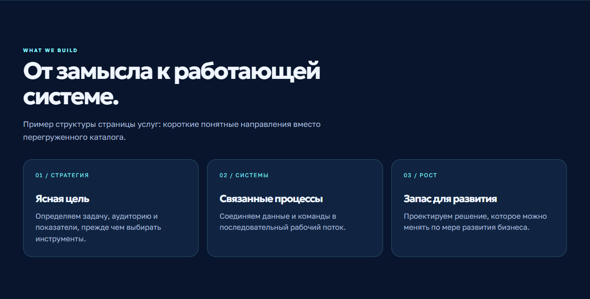
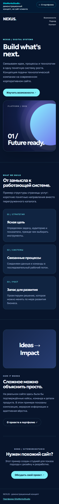

ДЕМОНСТРАЦИОННЫЙ КОНЦЕПТ / WEB
Как представить сложную технологическую услугу простым сайтом.
NEXUS — открываемый пример корпоративного сайта. Он показывает, как можно выстроить первый экран, рассказ о направлениях и путь к обращению.
СтатусДемо-концепт
ФорматОдностраничный концепт
ПосмотретьОткрыть сайт-концепт ↗
01 / ЗАДАЧА
Что хотели показать
Показать пример сайта для технологической компании, где посетитель быстро понимает направление бизнеса и может перейти к следующему шагу.
02 / ДЛЯ КОГО
Кому подходит подход
Компании с несколькими цифровыми услугами и сложным предложением.
03 / РЕШЕНИЕ
Что сделали
- Крупный первый экран с одним главным сообщением и заметным переходом к содержанию.
- Три понятных направления вместо перегруженного перечня возможностей.
- Отдельный блок о подходе и финальный призыв к обсуждению проекта.
- Адаптивная вёрстка для телефона и компьютера.
04 / ПОСМОТРЕТЬ
Экраны проекта



СЛЕДУЮЩИЙ ШАГ
Нужен проект с похожим подходом?
Опишите задачу, материалы и желаемый результат. Состав работ и стоимость обсудим до начала.